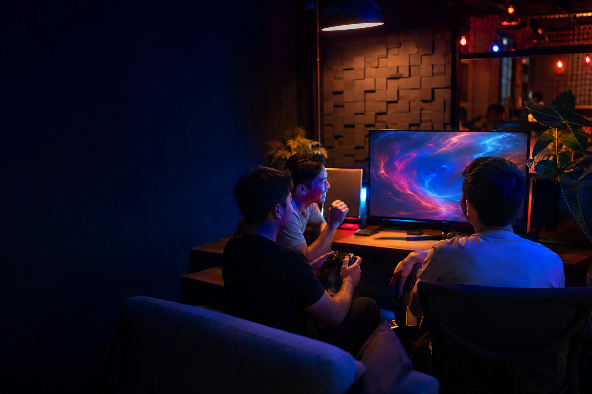

Main santai
Masuk untuk menikmati permainan, bukan membuktikan apa-apa.
Ruang yang baik memberi jalan ringan untuk menemukan sesi yang sesuai ritme, tanpa mengubah setiap pertemuan menjadi kompetisi.

Komunitas · Discovery · Main bareng
Studi portofolio tentang ruang digital yang membantu orang menemukan ritme bermain dan komunitas yang terasa pas.
Pilih suasanamuClean-room portfolio study
Bukan platform game aktif
Sebelum masuk ruang
Main santai
Ruang yang baik memberi jalan ringan untuk menemukan sesi yang sesuai ritme, tanpa mengubah setiap pertemuan menjadi kompetisi.
Anatomi komunitas
Konsep ini memprioritaskan relasi, konteks, dan rasa aman dalam menemukan orang untuk bermain. Nama game, pertandingan, statistik, dan akun di bawah ini sengaja tidak dibuat sebagai data nyata.
Mulai dari cara bermain dan suasana yang dicari, bukan hanya daftar permainan yang ramai.
Bantu pemain memahami ruang yang akan dimasuki sebelum mengajak mereka ikut serta.
Buat alasan untuk kembali pada orang dan komunitas yang sudah terasa cocok.
Pendekatan karya
Mengutamakan alasan orang datang sebelum memilih pola discovery.
Menata pilihan agar menemukan ruang yang tepat tidak terasa seperti mencari jarum di tumpukan.
Membentuk pengalaman yang tetap sederhana meski komunitas dan jenis permainan bertambah.
Catatan provenance
Gamenest adalah clean-room portfolio study. Seluruh visual dibuat secara orisinal untuk repositori ini; tidak ada penggunaan IP game, logo, karakter, data pemain, event, statistik, maupun akun pihak ketiga. Ini bukan layanan aktif dan tidak menyatakan komunitas atau sesi permainan yang benar-benar tersedia.